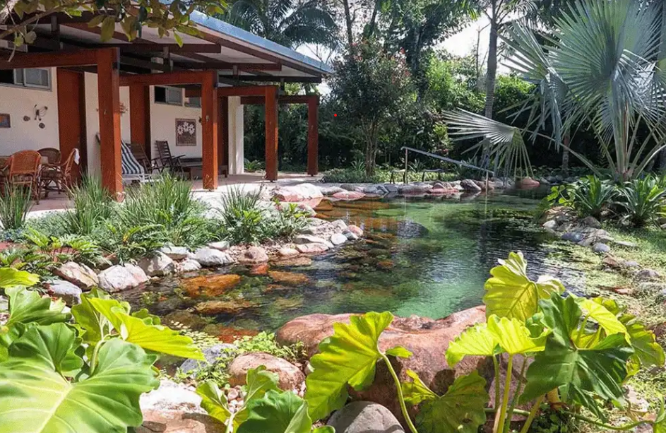
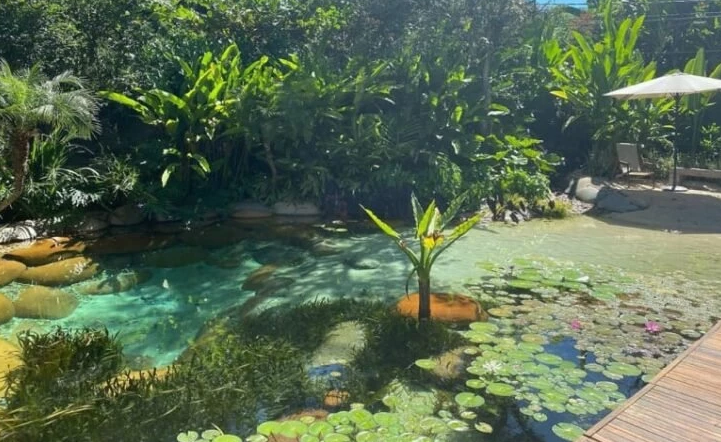

Além de trazer mais beleza e harmonia para a paisagem, a piscina é uma perfeita opção para garantir bons momentos de relaxamento, tranquilidade e contemplação da natureza. Conheça nossos projetos.

Lagos Naturais
Orgânicos, os lagos ornamentais privilegiam os peixes e plantas aquáticas e funcionam como grandes aquários perfeitos para o nado e lazer. André Bicalho e equipe montam os lagos e piscinas desde a escavação, passando pelos sistemas de impermeabilização e construção das estações de tratamento. Além de embelezar e umidifcar ambientes, os lagos trazem a natureza para a sua casa e são excelentes ambientes de lazer e contemplação.

Diferenciais
As piscinas são equipadas com sistemas de filtragem extremamente eficientes e inofensivos para os seres vivos do sistema. O sistema de funcionamento é composto por mídias filtrantes, gerador de oxigênio, bombas de água para a recirculação e filtros ultravioletas, formando uma filtragem mecânica e biológica.
Além disso, ela exige pouca manutenção, o que é uma vantagem incrível para nossos clientes.